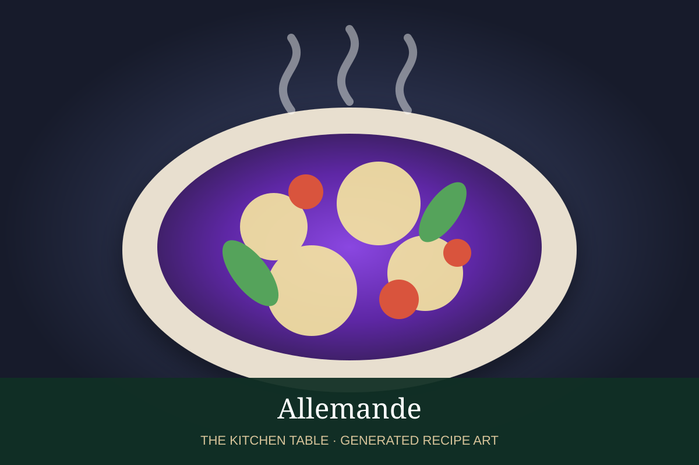

← Velouté & daughter sauces
SAUCE · VELOUTÉ DAUGHTER SAUCE
Allemande
Veal velouté finished with egg yolks, cream, lemon, and often mushroom cooking liquid; also called sauce parisienne.
25 minMakes about 2 cups

Photo: TasteAtlas
Ingredients
- 2 cups veal velouté
- 2 egg yolks
- 1/3 cup heavy cream
- 1/4 cup mushroom cooking liquid, optional
- 1 tbsp fresh lemon juice
- 2 tbsp cold unsalted butter
- Pinch of nutmeg
- Salt and white pepper
Preparation
- Warm the velouté with the mushroom liquid, if using.
- Whisk egg yolks and cream together in a bowl.
- Temper the yolk mixture with a little hot velouté, then whisk it back into the saucepan.
- Cook gently without boiling until lightly thickened.
- Remove from heat and whisk in lemon juice, butter, nutmeg, salt, and white pepper.
Base sauce: Start with the Velouté recipe →